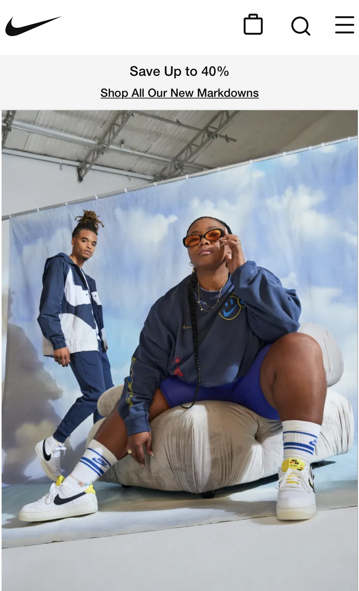

White Space and Clean Design
NIKE

Nike is famous for the simplicity in their famous dash. This website along with the most nike's material always have a very simple designr surround by much white space.
Contrast
ADIDAS
Adidas likes to add much more contrast to their material. In this website all the colors and shapes contrast to give the page a much nicer look.
Visual Hierarchy
Wizarding World
The first thing the fans of this page would like to see is the classic harry poter font used and then they see all the magical artifacts floating in the background, this use of visual hierarchy makes the website feel like th home of the wizarding world.